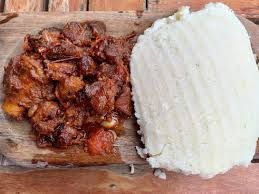

Ugali

Description
Ugali is a simple dish that is mainly taken in many Kenyan Homes and can be said to be the staple food in most Kenyan homes.
Ingredients.
- Heat water over medium heat in a deep pan. Make sure you take a pan with a handle.
- Sprinkle about 1 tbsp of the maize meal while the water comes to a boil.
- Add the maize meal or cornmeal and keep on stirring with a strong wooden spoon.
- Keep stirring and pressing the mixture against the sides of the pan to break up the lumps.
- As the mixture becomes thicker, it becomes more difficult to mix but keep mixing and breaking up the lumps.
- The mixture with begin to come away from the sides of the pan.
- Allow it to cook for 2-3 minutes.
- At this point either transfer the ugali to a platter from the pan. Place the plate over the pan and turn it upside down.
- Enjoy piping hot ugali with your favourite stew or curry.